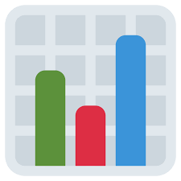
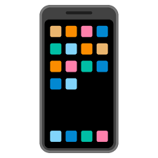

1. Yazılım ve Programlama Dilleri
- Python – Veri analizi, otomasyon, yapay zeka
- Java – Kurumsal uygulamalar, Android geliştirme
- C# – Windows uygulamaları, .NET tabanlı projeler
- JavaScript – Web geliştirme (HTML, CSS ile birlikte)
- SQL – Veri tabanı sorgulama
- PHP – Web tabanlı sistemler (özellikle içerik yönetimi)
2. Veri Tabanı Sistemleri
- MySQL, PostgreSQL – Açık kaynak veri tabanı sistemleri
- Oracle DB, Microsoft SQL Server – Kurumsal veri yönetimi
- MongoDB – NoSQL yapısı, esnek veri modelleri
3. Web Teknolojileri
- HTML, CSS, JavaScript – Temel frontend
- React, Angular, Vue.js – Gelişmiş frontend framework'leri
- Node.js, Django, ASP.NET – Backend geliştirme
 4. Bulut Teknolojileri ve Sunucular
4. Bulut Teknolojileri ve Sunucular
- Amazon Web Services (AWS), Microsoft Azure, Google Cloud
- Docker, Kubernetes – Uygulama konteynerleştirme ve yönetimi

5. Veri Analitiği ve Raporlama Araçları
- Excel (ileri düzey), Power BI, Tableau
- Python + pandas, NumPy, Matplotlib
- SPSS, R – Akademik analiz ve istatistiksel modelleme
6. İşletme Uygulamaları
- ERP Sistemleri (SAP, Oracle ERP)
- CRM Yazılımları (Salesforce, Zoho CRM)
7. Siber Güvenlik Araçları
- Wireshark, Kali Linux, Metasploit
- Güvenlik duvarları, antivirüs çözümleri
- Penetrasyon testleri ve ağ güvenliği yazılımları
8. Yapay Zeka ve Otomasyon
- Chatbot geliştirme
- Makine öğrenimi algoritmaları (scikit-learn, TensorFlow)
- RPA araçları (UiPath, Blue Prism)

9. Mobil Uygulama Geliştirme
- Android Studio (Java/Kotlin)
- Flutter, React Native – Platformlar arası geliştirme